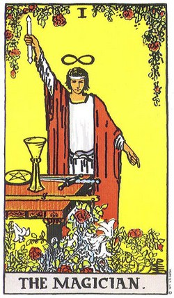
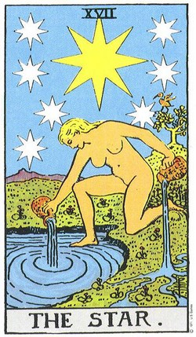
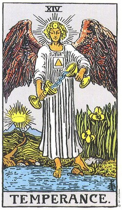

Ritual nocturno · Tarot consciente
Tarot y Otras Artes
Un espacio para explorar tu mundo interior
Cartas, símbolos y preguntas para una vida más consciente. Aquí, el Tarot es un puente hacia ti.
Elige tu pausa
Experiencias destacadas

Más espacios del MVP
Aprende, lee y conversa
La plataforma también incluye recursos públicos, publicaciones y un canal de contacto con validación simulada.

Biblioteca
Recursos de aprendizaje
Guías breves para entender arcanos, tiradas y cuidados del mazo.
Ir a biblioteca
Blog
Artículos del blog
Dos artículos con página de detalle para cumplir el alcance académico.
Ir al blog
Contacto
Canal de contacto
Formulario con revisión en tiempo real y envío simulado sin backend.
ContactarAdministración del sitio
Acceso para administradores y moderadores
Este ingreso corresponde al panel interno simulado del MVP. Se mantiene fuera del menú público porque en una versión real estaría reservado para usuarios con permisos de administración.